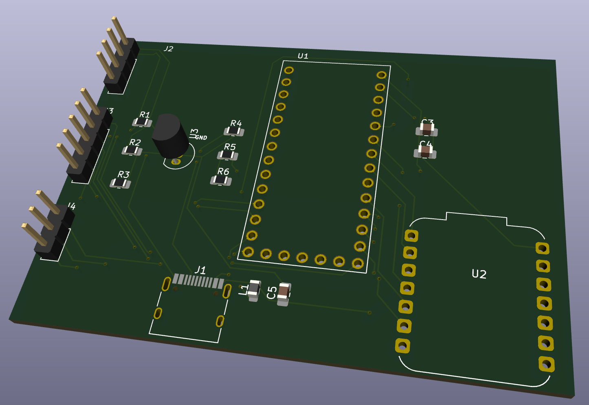

Custom EMG Signal Processing PCB
A hardware solution for biopotential data collection and wireless transmission.


To reduce signal noise in EMG data collection and create a compact, processing system for a wearable diagnostic prosthetic.
USB-C Powered, 3-Channel EMG input, 5V/2.5V/GND rail distribution, and integrated Bluetooth (ESP32) communication.
Designed in KiCad; utilizes a Teensy for high-speed ADC and an ESP32 for wireless data transmission.
True North Biocompetition
Reliable EMG data requires a stable power environment and clean signal routing. This project involved designing a custom 2-layer PCB to bridge the gap between raw analog muscle signals and digital control systems. I produced this board for the True North Biocompetition, in which it will pick up a user's muscle data as they wear a leg brace, and export it to an app to track their recovery. I was responsible for this PCB alone.
The board features a USB-C power input with a filtering circuit to ensure stable voltage across all components. It processes three independent signal lines from EMG sensors through a Teensy microcontroller, leveraging its superior ADC capabilities. The processed data is then handed off to an ESP32, which uses Bluetooth to transmit signals to an outside device with minimal latency.
Key design considerations included trace width for power rails, strategic placement of decoupling capacitors to suppress switching noise, and the inclusion of dedicated 5V and 2.5V breakout pins for auxiliary hardware.